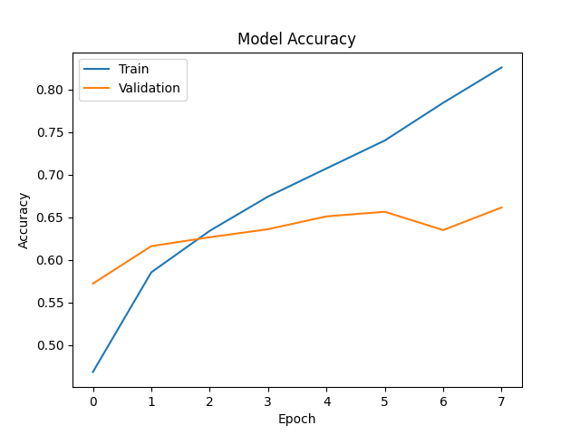
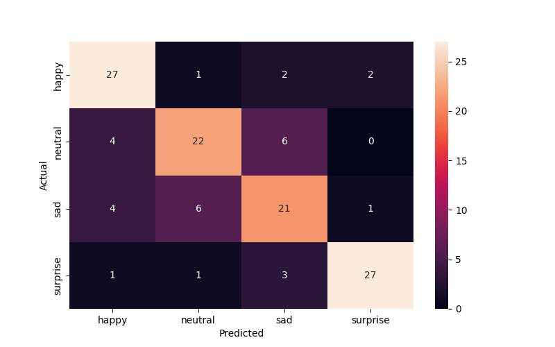
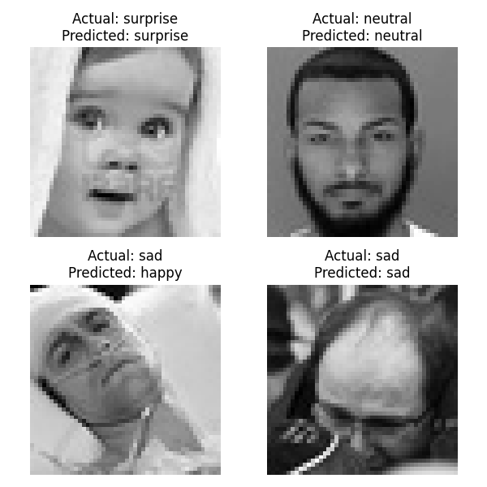

        <html>
        <head><title>Model Summary - 2024-03-03 17:43:44</title></head>
        <body>
        <h1>Model Summary</h1>
        <pre>Model: "sequential"
_________________________________________________________________
 Layer (type)                Output Shape              Param #   
=================================================================
 conv2d (Conv2D)             (None, 48, 48, 32)        320       
                                                                 
 max_pooling2d (MaxPooling2  (None, 24, 24, 32)        0         
 D)                                                              
                                                                 
 conv2d_1 (Conv2D)           (None, 24, 24, 64)        18496     
                                                                 
 max_pooling2d_1 (MaxPoolin  (None, 12, 12, 64)        0         
 g2D)                                                            
                                                                 
 flatten (Flatten)           (None, 9216)              0         
                                                                 
 dense (Dense)               (None, 64)                589888    
                                                                 
 dense_1 (Dense)             (None, 4)                 260       
                                                                 
=================================================================
Total params: 608964 (2.32 MB)
Trainable params: 608964 (2.32 MB)
Non-trainable params: 0 (0.00 Byte)
_________________________________________________________________
</pre>
        <h2>Test Accuracy</h2>
        <p>
1/4 [======>.......................] - ETA: 0s - loss: 0.6162 - accuracy: 0.7812
4/4 [==============================] - 0s 1ms/step - loss: 0.7188 - accuracy: 0.7578
</p>
        <h2>Accuracy Plot</h2>
        
        <h2>Classification Report</h2>
        <pre>              precision    recall  f1-score   support

       happy       0.75      0.84      0.79        32
     neutral       0.73      0.69      0.71        32
         sad       0.66      0.66      0.66        32
    surprise       0.90      0.84      0.87        32

    accuracy                           0.76       128
   macro avg       0.76      0.76      0.76       128
weighted avg       0.76      0.76      0.76       128

</pre>
        <h2>History</h2>
        <pre>Epoch 1: loss: 1.1770, accuracy: 0.4682, val_loss: 1.0253, val_accuracy: 0.5720
Epoch 2: loss: 0.9773, accuracy: 0.5853, val_loss: 0.9401, val_accuracy: 0.6160
Epoch 3: loss: 0.8762, accuracy: 0.6340, val_loss: 0.8924, val_accuracy: 0.6265
Epoch 4: loss: 0.7981, accuracy: 0.6743, val_loss: 0.8858, val_accuracy: 0.6359
Epoch 5: loss: 0.7214, accuracy: 0.7073, val_loss: 0.8351, val_accuracy: 0.6510
Epoch 6: loss: 0.6434, accuracy: 0.7402, val_loss: 0.8566, val_accuracy: 0.6564
Epoch 7: loss: 0.5548, accuracy: 0.7845, val_loss: 0.9528, val_accuracy: 0.6349
Epoch 8: loss: 0.4627, accuracy: 0.8261, val_loss: 0.9378, val_accuracy: 0.6614
</pre>
        <h2>Confusion Matrix</h2>
        
        <h2>Predicted Images</h2>
        
        </body>
        </html>
        